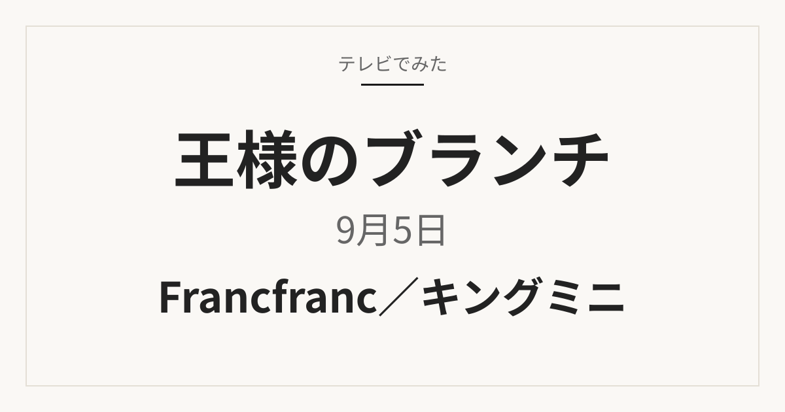

Francfranc／キングミニ
ブランチ Francfranc／キングミニ
Francfranc、キングミニ、文具で確認できた商品をまとめました。
紹介された商品を見る
テレビ紹介商品の記録メディア
次回の放送
買い物の達人
重岡大毅さん・原菜乃華さんが10万円でお買い物
放送後、商品名を公式情報で確認できたものから順次掲載します。
これまでに紹介された商品を見る最新の記事
新しい順
このページについて
「王様のブランチを見ていて気になったけれど、商品名を覚えていない」。そんなときに、放送日や企画名から商品を探せるようにまとめています。特に「買い物の達人」やトレンド企画で紹介された、暮らし・旅行・ファッション・グルメの商品を中心に掲載します。
放送前は番組公式の予告で確認できた企画だけを案内し、具体的な商品名や順位は推測で掲載しません。放送後に番組公式サイト、メーカー公式情報などを照合し、確認できた情報から記事へ反映します。価格や販売状況は変わることがあるため、購入時は販売ページの最新表示をご確認ください。
ほかの番組
TBS「王様のブランチ」公式サイトで次回放送の内容を確認しています。
当サイトは番組公式サイトではありません。